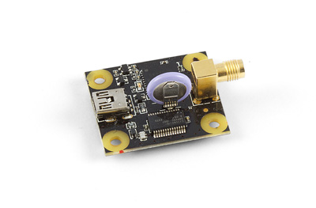
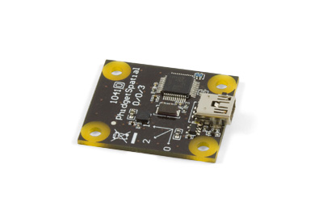
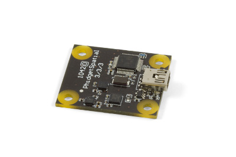
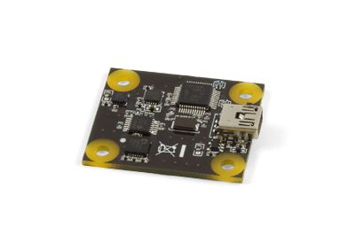
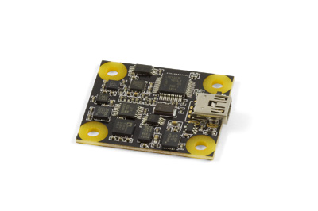
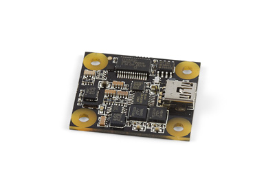
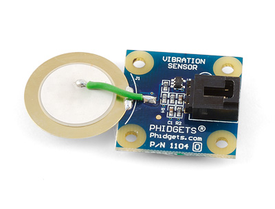
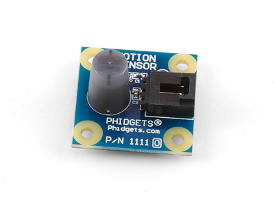

GPS

Product Features
Measure global position, velocity and heading with the GPS. Best case accuracy of 2.5m CEP.
Product Description
The GPS provides the longitude and latitude of the board's position in signed decimal degree format. The position accuracy (best case) is 2.5m CEP (Circular Error of Probability).
The 1040 also provides altitude, heading and velocity as well as the time and date. It will also let you know when it has a satellite fix.
The GPS has a 3V rechargeable lithium battery to provide "hot starts" by remembering its previous positions. With a live battery, the 1040 can perform a signal re-acquisition in less than 1 second. The battery provides up to 1 month of operation before having to be recharged. Recharging an empty battery takes 24 hours.
Spatial 0/0/3 Basic

Product Features
This spatial board had a 3-axis, ±8g accelerometer and connects to your computer via USB.
Product Description
The Spatial 3/3/3 is a 3-axis accelerometer that can measure up to ±8g of acceleration in each axis. It is an inexpensive alternative to the Spatial Precision 0/0/3, and is ideal for applications where it's more important to know the direction of acceleration than the precise amount.
The sensor could be used to:
- Track whether an object is moving, and in which direction
- Detect the presence of nearby movement or vibration
- Track the orientation of a stationary object relative to the earth's gravitational pull
Spatial 3/3/3 Basic

Product Features
This spatial board has a 3-axis accelerometer, gyroscope and compass and connects to your computer via USB.
Product Description
The Spatial 3/3/3 combines the functionality of a 3-axis compass, a 3-axis gyroscope, and a 3-axis accelerometer all in one convenient package. It is an inexpensive alternative to the Spatial Precision 3/3/3, and is ideal for applications where it's more important to know the general motion of an object rather than the precise amounts.
The sensor could be used to:
- Track whether an object is moving, and in which direction
- Detect the presence of nearby movement or vibration
- Track the orientation of a stationary object relative to the earth's gravitational pull and the direction relative to magnetic north
Spatial Precision 0/0/3 High Resolution

Product Features
This spatial board has 3-axis, ±8g accelerometer with high resolution measurements at low magnitudes.
Product Description
The Spatial Precision 0/0/3 is a 3-axis accelerometer that can measure up to ±8g of acceleration in each axis, and has high precision when measuring acceleration within ±2g. The transition from high precision to low precision mode and back is completely seamless and automatic.
If precision is not an important factor for your application, consider the 1041 - Spatial 0/0/3 instead.
The sensor could be used to:
- Sense tilt angle in remotely controlled vehicles
- Capture motion input data for research purposes
- Detect the presence of nearby movement or vibration
Spatial Precision 3/3/3 High Resolution

Product Features
This spatial board has a 3-axis accelerometer, gyroscope and compass with high resolution measurements at low magnitudes.
Product Description
The Spatial Precision 3/3/3 combines the functionality of a 3-axis compass, a 3-axis gyroscope, and a 3-axis accelerometer all in one convenient package. It has enhanced precision in the accelerometer when measuring less than ±2g, and enhanced gyroscope precision at speeds less than 100°/s. The transition from high precision to low precision mode and back is completely seamless and automatic.
If precision is not an important factor for your application, consider the Spatial 3/3/3 instead.
The sensor could be used to:
- Provide spatial data for a remote control vehicle
- Capture motion input data for research purposes
- Gather motion statistics for moving objects
Spatial 3/3/3

Product Features
This spatial board has a 3-axis accelerometer, gyroscope and compass and connects to your computer via USB.
Product Description
The Spatial 3/3/3 High Resolution functions very similarly to the previous one. It has the same dimensions and fits the same enclosure. The API functions and events are also the same.
The main difference is that some of the chips used to make the previous one have gone obsolete and are no longer available. The sensor features new accelerometer, gyroscope, and compass chips, as well as additional "backup" accelerometer and gyroscope chips that have a wider measurement range but lower accuracy. The result is a spatial with high accuracy within a certain range, and low accuracy beyond that range. For specific numbers, check the specification table on these - Spatial 3/3/3 High Resolution product page.
You may also be interested in the Spatial 3/3/3 Basic; a simple spatial based on these, but offered at a drastically reduced cost. It has the same measurement range, but doesn't have the extra resolution at lower measurement values that these has.
Vibration Sensor

Product Features
The vibration sensor uses a piezoelectric element to measure vibration on a surface and connects to an analog input.
Product Description
This sensor buffers a piezoelectric transducer. As the transducer is displaced from the mechanical neutral axis, bending creates strain within the piezoelectric element and generates voltages.
If the assembly is supported by its mounting points and left to vibrate “in free space” the device will behave as a form of vibration sensor. The sensing element should not be treated as a flexible switch, and is not intended to be bent.
Motion Sensor

Product Features
Sensing changes in IR light, this sensor detects movement in a small room or hallway and connects to an analog input.
Product Description
The sensor detects changes in infrared radiation that occur when there is movement by a person (or object), which is different in temperature from the surroundings. As this sensor detects temperature differences, it is well suited to detecting the motion of people by their body temperature.
This sensor is also characterized by a narrow sensing area.
We Provide:
- To be accessible, friendly, and helpful at all times.
- To answer the phone when you call, 24/7/365.
- Reply to your emails and support tickets within 24 hours.
- To provide timely information about new hardware.
- To provide all design documentations.
Please fulfill following request form to get more information!